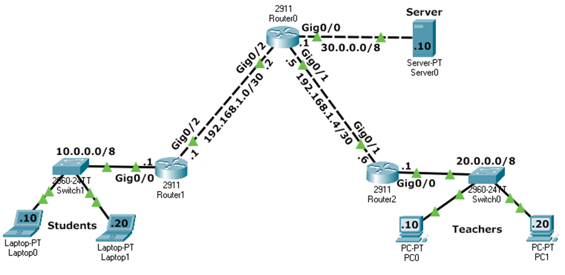

Objective
In this advanced lab, you will build a multi-router topology from scratch. You will configure basic security, establish IP connectivity, and use OSPF Area 0 for dynamic routing. Finally, you will implement a Standard Named ACL on the core router to control access to the central server.
Lab Topology

| Network | Subnet | Default Gateway | Router Interface |
|---|---|---|---|
| Students | 10.0.0.0/8 |
10.0.0.1 |
Router1 Gi0/0 |
| Teachers | 20.0.0.0/8 |
20.0.0.1 |
Router2 Gi0/0 |
| Server | 30.0.0.0/8 |
30.0.0.1 |
Router0 Gi0/0 |
| Link R0–R1 | 192.168.1.0/30 |
— | R1 Gi0/2 (.1) / R0 Gi0/2 (.2) |
| Link R0–R2 | 192.168.1.4/30 |
— | R0 Gi0/1 (.5) / R2 Gi0/0 (.6) |
Task 1 – Basic Device Configuration
Configure hostname, security, and banners on Router0, Router1, and Router2.
Router(config)# hostname RouterX RouterX(config)# no ip domain-lookup RouterX(config)# banner motd # Authorized Access Only #
Task 2 – Interface IP Addressing
Bring up the interfaces and assign IPs according to the topology table.
Router0 – Interface Config
Router0(config)# interface gigabitethernet 0/0 Router0(config-if)# ip address 30.0.0.1 255.0.0.0 Router0(config-if)# no shutdown Router0(config-if)# exit Router0(config)# interface gigabitethernet 0/1 Router0(config-if)# ip address 192.168.1.5 255.255.255.252 Router0(config-if)# no shutdown Router0(config-if)# exit Router0(config)# interface gigabitethernet 0/2 Router0(config-if)# ip address 192.168.1.2 255.255.255.252 Router0(config-if)# no shutdown
Task 3 – Dynamic Routing (OSPF Area 0)
Enable OSPF Process 1 on all three routers to ensure the network is fully reachable.
Router0 – OSPF Settings
Router0(config)# router ospf 1 Router0(config-router)# router-id 0.0.0.0 Router0(config-router)# network 30.0.0.0 0.255.255.255 area 0 Router0(config-router)# network 192.168.1.0 0.0.0.3 area 0 Router0(config-router)# network 192.168.1.4 0.0.0.3 area 0
show ip route to confirm all networks (10.x, 20.x, 30.x) are
learned via OSPF (marked with 'O').
Task 4 – Implementing Standard Named ACL
Create the BlockStudents ACL on Router0 and apply it outbound on the interface
facing the Server.
Router0(config)# ip access-list standard BlockStudents Router0(config-std-nacl)# deny 10.0.0.0 0.255.255.255 Router0(config-std-nacl)# permit any Router0(config-std-nacl)# exit Router0(config)# interface gigabitethernet 0/0 Router0(config-if)# ip access-group BlockStudents out
Task 5 – ACL Verification
Check the ACL configuration and match statistics.
Router0# show ip access-lists Standard IP access list BlockStudents 10 deny 10.0.0.0, wildcard bits 0.255.255.255 (4 matches) 20 permit any (12 matches)
Task 6 – Connectivity Verification (Ping Results)
Perform pings from the following sources to confirm the policy is working as expected.
| From Device | To Destination | Expected Result | Reason |
|---|---|---|---|
| Student PC1 | Server (30.0.0.10) | FAILED | Blocked by ACL (Standard Rule 10) |
| Student PC1 | Teacher PC1 (20.0.0.10) | SUCCESS | Direct OSPF routing (no ACL) |
| Teacher PC1 | Server (30.0.0.10) | SUCCESS | Matches permit any |
| Teacher PC1 | Student PC1 (10.0.0.10) | SUCCESS | No ACL on this path |
| Server | Teacher PC1 | SUCCESS | Normal routing |
| Server | Student PC1 | SUCCESS | ACL only blocks Students outbound |
Task 7 – Deleting the Security Policy
Router0(config)# interface gigabitethernet 0/0 Router0(config-if)# no ip access-group BlockStudents out Router0(config-if)# exit Router0(config)# no ip access-list standard BlockStudents